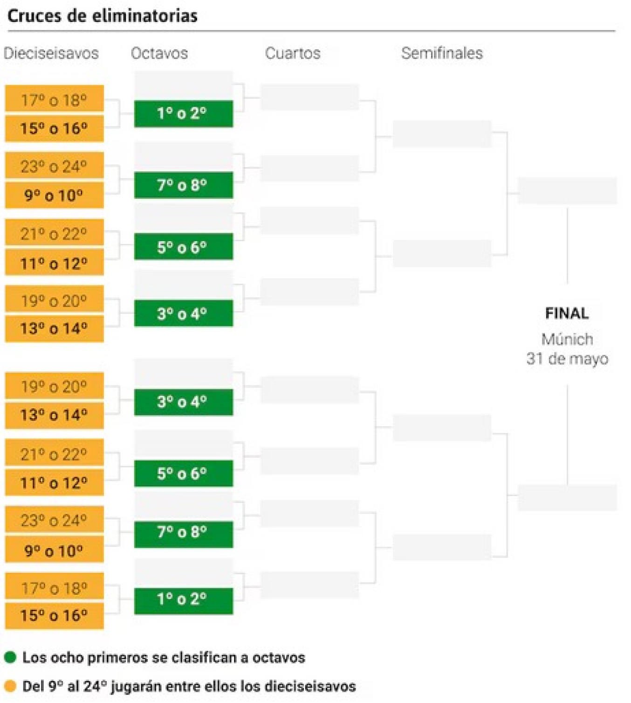
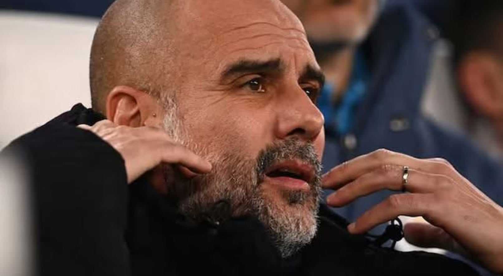

UEFA Champions League.
 
Así quedarían los cruces de los playoffs
de la Champions League.
Manchester City en riesgo de quedar
fuera de la Champions League.
A falta de dos jornadas para finalizar la fase
liga del renovado formato, se van perfilando
tanto los dieciseisavos de final como los
octavos. El Barcelona, el único español en el
Top-8. El Girona, virtualmente eliminado. Real
Madrid y Atlético, en puestos de playoff.
El City sumó el enésimo capítulo negativo de una
temporada para el olvido. Envuelto en el juicio
más mediático del fútbol y atravesando el peor
momento desde que Guardiola está en el banquillo
-con 6 derrotas y 1 victoria en los últimos 9
encuentros-, el City llegó a Turín con la obligación
de ganar a una 'Juve' que no estaba en mucha
mejor forma.